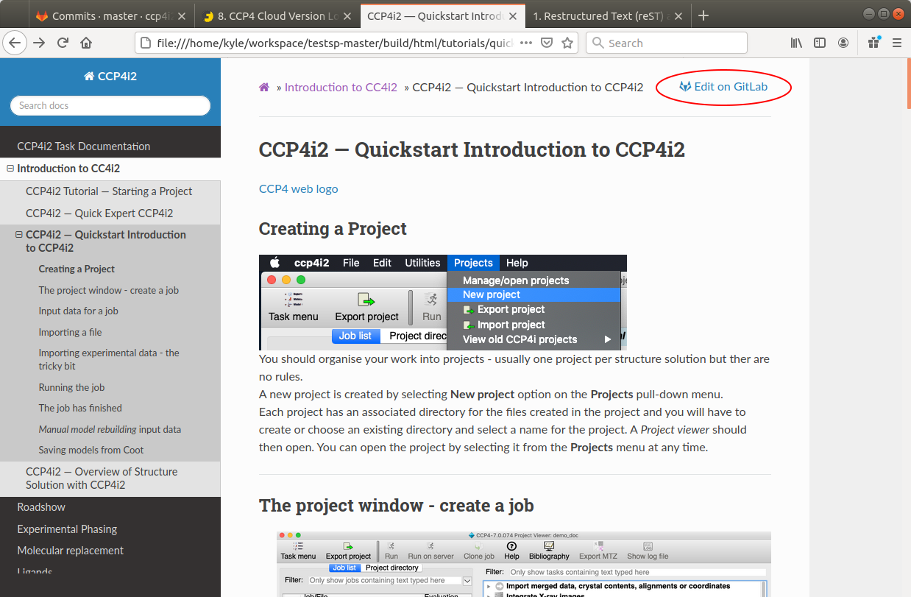

How to Contribute to the Documentation¶
CCP4i2 Documentation Editing Guide¶
If you would like to contribute to the ccp4i2 documentation, the first step is obtain a gitlab account (if you don’t already have one). All the relevant files you need to edit are on gitlab so this is essential. You can easily sign up for gitlab at http://www.gitlab.com . Login into this account and you are good to go !
How to Edit an Existing File on Gitlab¶
If you would like to change something in the documentation, in a page that is already exists, you will need to edit the relevant rst file (the rst file is used to build the html file), this is quite a simple procedure for CCP4i2. First you need to press the gitlab button (this is on the top right hand corner of every document page), and this will take you directly to the correct file on gitlab.

After pressing the button you should now be looking at the gitlab page for the corresponding rst file. Currently it is set to preview mode - you can switch modes using the two buttons, to the left of the blue Edit button. You can edit and change this file by pressing the blue button in the middle of the screen - doing this will take you into the file itself (at this point you can either save changes or cancel if you want to leave it as it is).

The rst text itself should be fairly easy to read, but you can find several guides to writing rst files on the web, with some suggestions below.
How to Add a New File¶
Adding a new file is a straightforward procedure with the Gitlab interface. First you should go to the root directory of rstdocs; if you click on the text rstdocs (this can be seen on the image above - on the white area just underneath the blue bar at the top), this will take you to the correct area.
After doing this, the project structure will be shown at the bottom of the page and can be navigated like a normal directory structure. You will also see a large plus sign which if you click on will reveal a drop down menu, which will allow you to add a new file - this can be any sort of file, rST or image etc. nb. you will have to be logged on to a Gitlab account, with access to the project, in order to have access to this - if you are not logged in the plus icon will be absent.
These steps are described in full detail in the gitlab instructions
Manually Editing the Documentation¶
Though it is recommended that you use the Gitlab interface for straightforward cases, in some instances advanced users may wish to use Git on the command line, and build the documentation themselves. A brief guide on how to do this is located here .